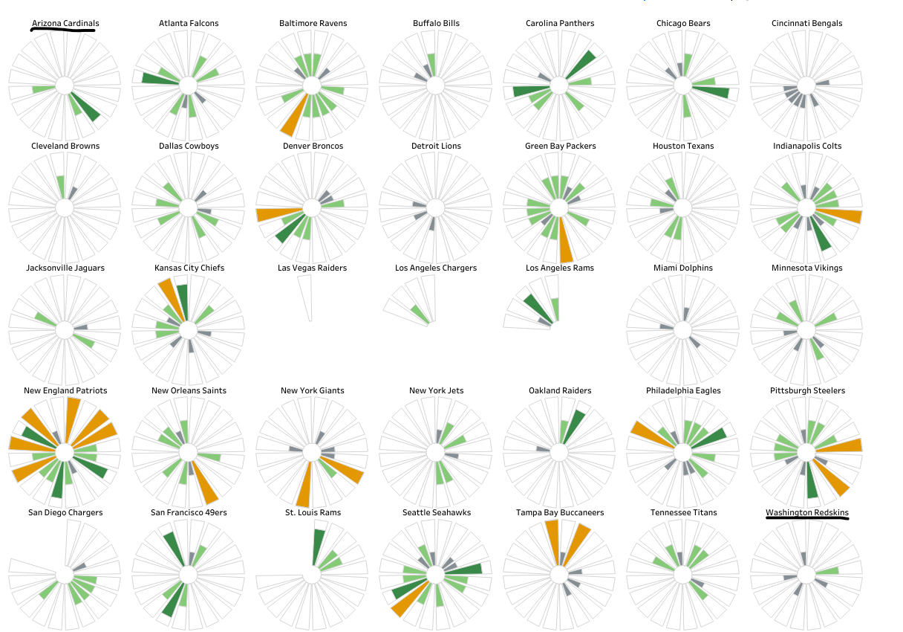
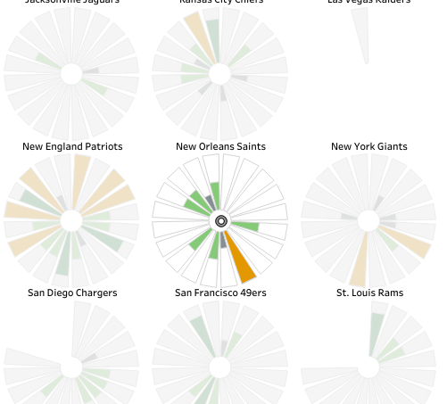
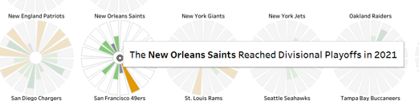
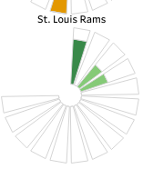
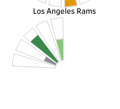

Website Link here
Data Visualization Description
The purpose of this visualization is to give the users an overview of how the NFL playoffs have gone over the past 20 years. The data comes from the result of every playoff game in the NFL from 2002 to 2021. It was created using ESPN and pro football HOF’s database. This visualization is made for all fans of NFL football or just football in general. It appeals to fans who love the whole sport to fans who only love one team. The user is able to look and reflect on their franchise’s most recent success or failure. They can also look at rival teams and compare their success. This tool allows users to see the results year in and year out. To see specific information, you can click on a piece of the pie chart, and it will produce a tool tip that describes the specific results of the season.
Data Visualization Insights
One insight you can get with this tool is see which franchises have had standout success by seeing who’s pie charts are the most filled out. You can also see very easily which franchises have seen the least amount of success and suffered the most. It’s great for being able to break franchises into tiers of success but not great for precision analysis from franchise to franchise.
Data Visualization Effective Design Choices

- Ordering the franchises in alphabetical order makes it easy to navigate and find whatever franchise you’re interested in looking at.
- Color coding the pie chart slices based on the end results tackles the lack of scalability for filling out the pie chart slices.

- Highlighting a slice when clicked helps with any distractions in your peripherals.

- Tooltips for each slice don’t show up until you’ve hovered for a couple seconds, avoiding constant tooltips popping up.


- Separating the teams' pie charts when they changed location allows users to see if the franchises had more success before or after they moved.
Data Visualization Ineffective Design Choices
- Adding more interactivity by highlighting every team that a selected team played during that playoff run, with possibly some kind of color indicator for which team ended their playoff run if they were eliminated, would enhance the visualization.
- Adding buttons or toggles to change the order maneuvering into something more familiar for the end users like grouping the teams in divisions could improve usability.
- Changing the border colors of the pie slices based on the seeding the team had in the playoffs (e.g., first seed having a different border color than a 6th seed) could provide additional insights.